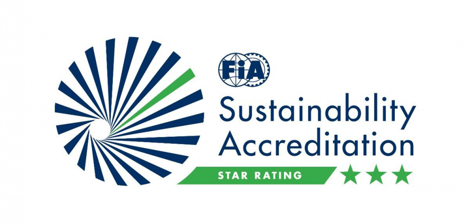

Hello, Formula One Fans
Formula One Global Summit 2022
The Global Summit brings together the community of experts, academics, and activists who comprise the Creative Commons affiliate network in a different country every two years. This year, we hope to expand our invitation list including organizations and invidivuals who want to work with us on shared projects that advance the cause of the Commons, free culture and open knowledge. So if you're active and engaged in the worlds of open content and knowledge - free software advocates, Wikipedians. Open Knowledge, galleries, libraries, museums, archives, governments and foundations, lawyers, and activists - we hope you'll consider joining us this year to build a stronger, more vibrant commons together.
The Global Summit brings together the community of experts, academics, and activists who comprise the Creative Commons affiliate network in a different country every two years. This year, we hope to expand our invitation list including organizations and invidivuals.
For any questions about the upcoming F1 Sustainability Global Summit 2022,please email us!
strategy@Formula1.comFormula 1 Sustainability 2022 Logo
The logo of Formula 1 Sustainability 2022 summit was decided through the logo competition from 8 June to 7 July. After online public voting and Selection Committee's judging process, the logo from Naresh Agrawal won the prize. After consultation with Mr. Agrawal we optimized the prize-winning-logo for this year's summit as following:
The logo of Formula 1 Sustainability 2022 was decided through the logo competition from 8 June to 7 July.
See the past F1 Sustainability Summits
Take a look at the last two F1 Sustainability Summits which took Place in Hungary and in Paris
2020
F1 Sustainability Summit 2021, Hungary
2021
F1 Sustainability Summit 2021, Paris
Partners